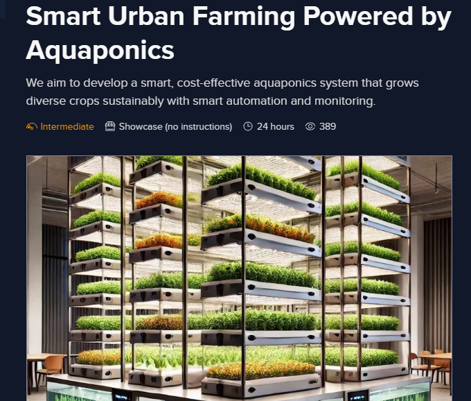
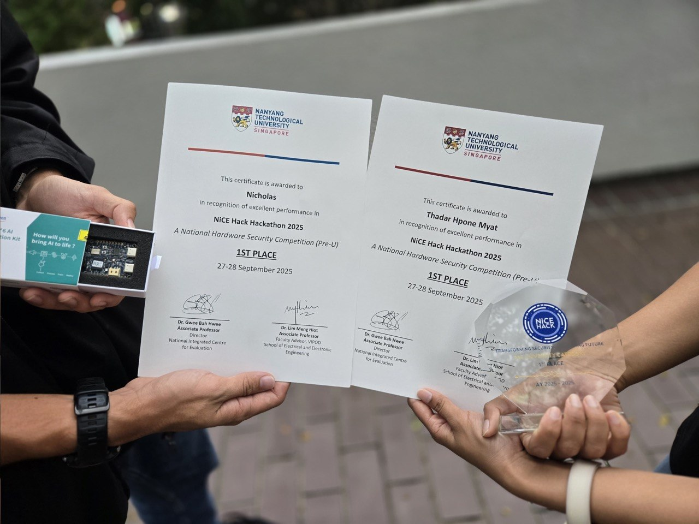
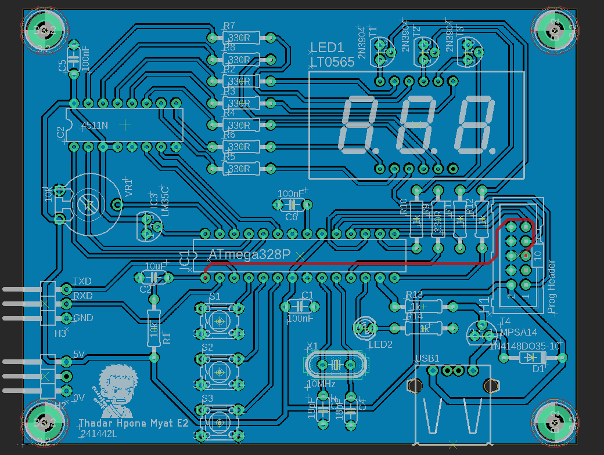
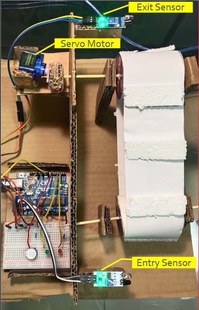
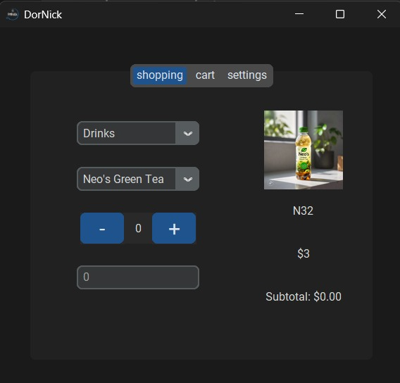
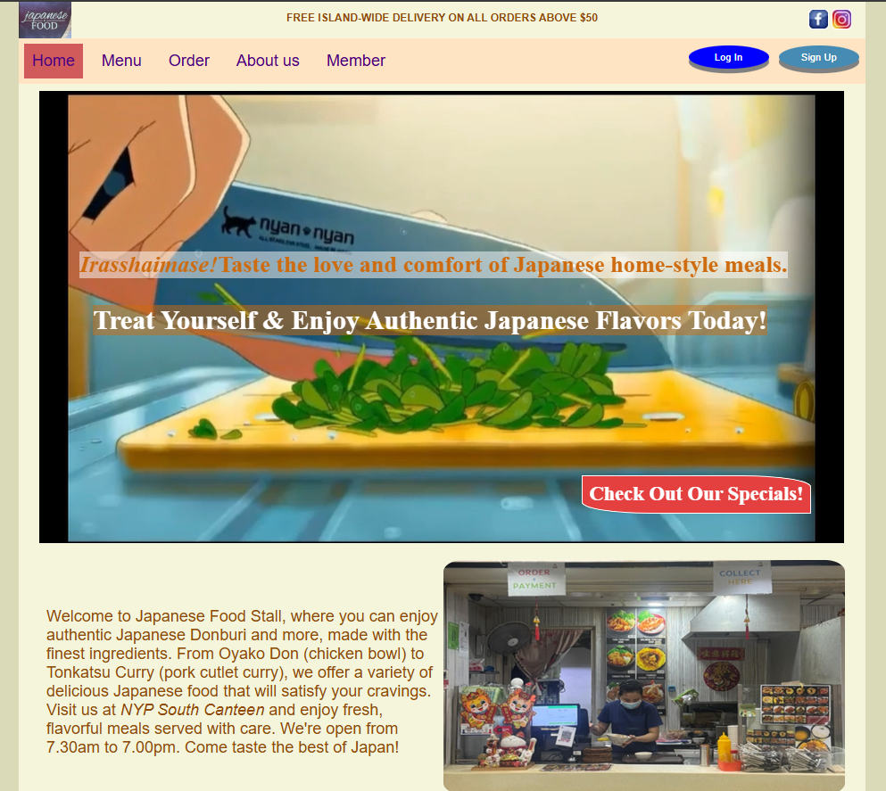
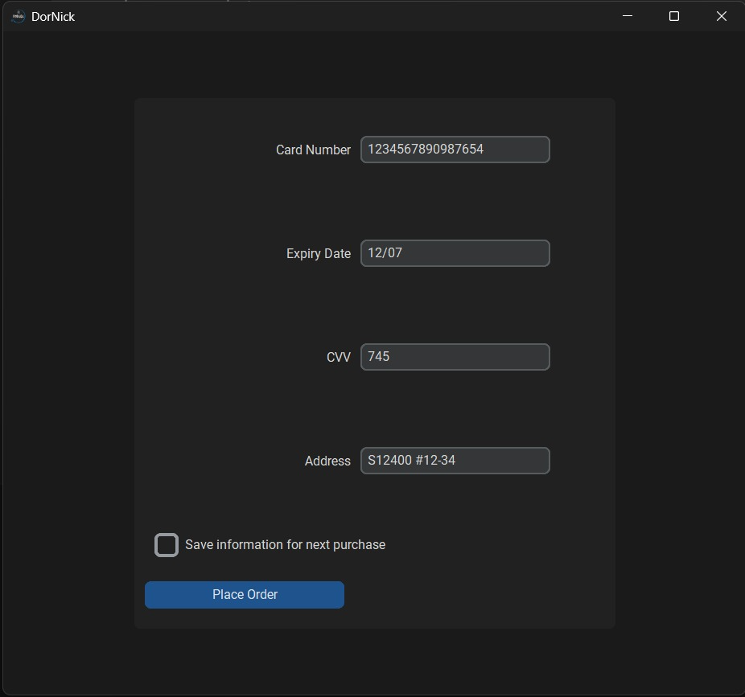
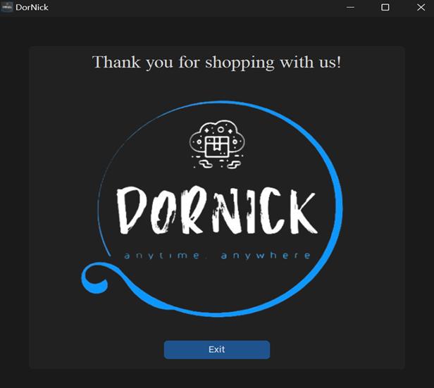

Projects
From embedded systems and PCB design to web applications, these projects reflect my journey as an engineering student, each one building new technical skills, creativity, and real-world problem-solving experience.

Smart Aquaponics System
Team-developed automated aquaponics system with real-time monitoring and environmental control using M5Stack and UIFlow2 to support sustainable multi-crop farming.

Smart Home Guardian System
IoT-based home security system with real-time monitoring, sensor integration, and remote alerts to improve residential safety and home automation.

NiCE Hack 2025: Hardware Cybersecurity Hackathon @ NTU
Collaborated in a team to perform Side Channel Attacks on AES hardware using Electromagnetic (EM) analysis and Correlation Power Analysis (CPA), earning 1st Place in the Pre-University category.

PCB Design Project
Designed and developed a custom PCB based on the ATmega328P microcontroller, integrating a 3-digit seven-segment display, push buttons, and USB connectivity.

Escalator Automation System
Prototype energy-saving escalator that activates only when users are detected, using infrared sensors, servo motors, and embedded control logic.

DorNick - Grocery App
Full-stack grocery shopping application featuring product browsing, shopping cart management, price calculations, and simulated payment processing.

Food Stall Website
Responsive website developed for an NYP Japanese food stall, featuring menu browsing, membership registration, and online ordering functionality.

Calculator App
Desktop calculator application with a clean graphical interface, supporting standard arithmetic operations while demonstrating GUI development and event-driven programming.

Doodle App
Interactive drawing application featuring freehand sketching, colour selection, and canvas controls, built to explore graphical user interface design.